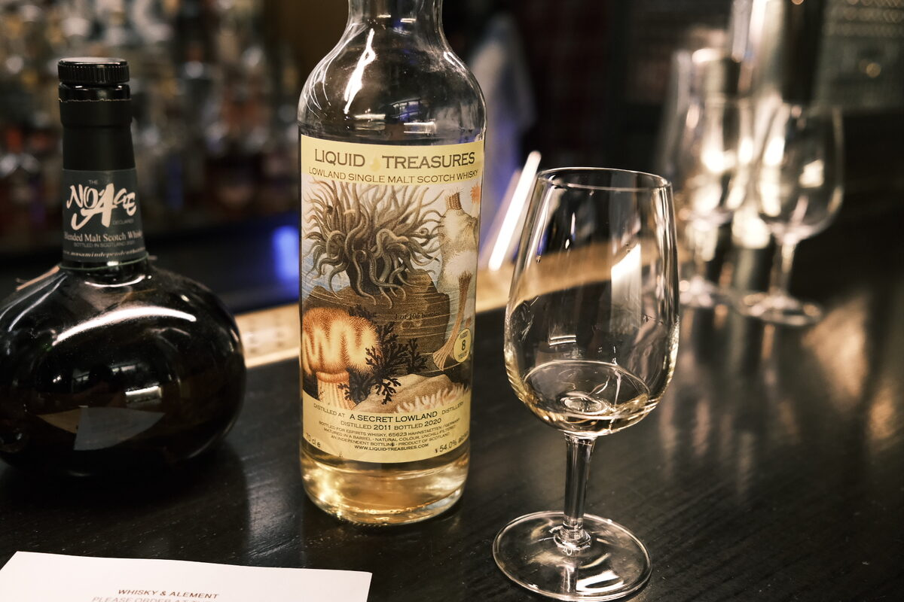

Secret Lowland 2011 Liquid Treasures 8 years 54% (barrel)
Shh… more secrets.
Colour Straw.
Nose Oranges, tangerines. A pinch of chalk, some minerality. Sherbet. Boiled lollies. Rum and raisin chocolate. Macadamia nuts. With water, fruit loops (note to kids: start writing tasting notes for your cereals). A hint of melon.
Palate Thick and oily. Toffee apples and boiled sweets. Malty. It’s very sweet – grain sweetness. Sugary cereals. With water, melons, maltier.
Finish Fresh pears, a hint of wax. Bananas and mangoes: tropical! Swirls of caramel and soft serve ice cream. With water, sweeter. Some dark chocolate and earthy notes.
Comments Very light, delicate. Good execution. (unpeated Ailsa Bay?) 84/100.

Posted by Dominic on 14 Jun 2021